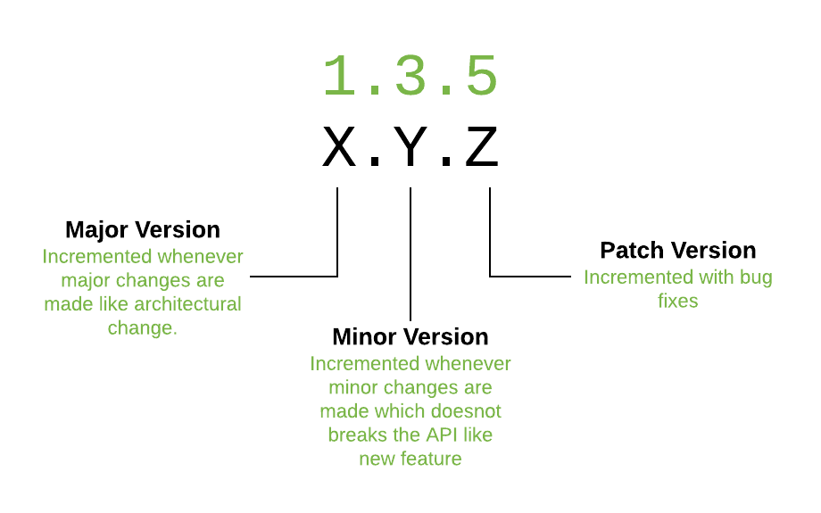
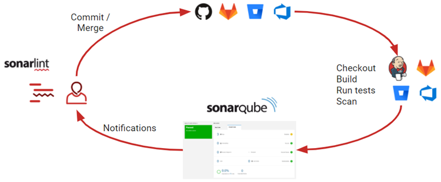

Warsztat programisty
Mateusz Kamiski

Agenda
- Pisanie kodu - IDE
- Repozytoria kodu - Version Control Systems
- Narzdzia budowania aplikacji
- Wersjonowanie aplikacji
- Repozytoria artefaktów
- Ciga Integracja i Cige dostarczanie
- Zarzdzanie projektem programistycznym i nie tylko - Attlasian JIRA
IDE
Dobierany w zależnoci od typu (jzyka) projektu.
| Jzyki | Technologie | IDE |
|---|---|---|
| Java, Kotlin, Scala | backendowe | Intellij IDEA, Eclipse |
| Javascript, Typescript, CSS, HTML | frontedowe | Visual Studio Code, Atom |
| Docker, Puppet, Ansible, Bash | devops | Visual Studio Code, Vim |
Ale zasadniczo wszystko można pisa we wszystkim :)
CTRL+SPACE i inne
- Inteligentne wspomaganie - edytor przewiduje co chcemy napisa
- Analiza kodu - czyli to czego kompilator nie wykryje (i my również :) )
- Clean code - narzdzia "sprztajce" (lintery) i refaktoryzujce
-
Hot reload - podmiana kodu w dziaajcej aplikacji w trybie deweloperskim:
DCEVM
- Użyteczne pluginy - mnogo dodatków usprawniajcych nasz codzienn prac
Version Control System
- Nie tylko dla kodu
- Rozproszone lub scentralizowane
- Najpopularniejszy - GIT
- Stanowi portfolio programisty
- Niezależny od jzyka programowania - nie zwalnia nas od testowania poprawnoci wprowadzanych zmian!
Podstawy obsugi GITa
Warto sprawdzi nawet jeli komu si wydaje, że dobrze zna GITa :) https://learngitbranching.js.org
Commit - zasady
- Trafna nazwa opisujca w skrócie zrealizowane zmiany w ramach commita.
- Nazwa zawiera odniesienie do zgoszenia w JIRA lub innego narzdzia do prowadzenia projektów.
- Mniejsze niż wiksze.
- Staramy si nie nadpisywa istniejcej historii.
- Przed stworzeniem sprawdzamy czy aplikacja buduje si i dziaa poprawnie (w zakresie naszych zmian).
Merge vs Rebase

Ogólna zasada: merge robimy na branchach zdalnych, rebase na zmianach lokalnych (commit lub branch).
Konflikty
- Nieuniknione w wielosobowych zespoach pracujcych nad tymi samymi funkcjami systemu.
- Musz zosta rozwizane podczas operacji merge lub rebase.
- Mog by przyczyn dodatkowych defektów - git nie zna jzyków programowania :)
- Po rozwizaniu konfliktów sprawdzamy czy wciż:
- aplikacja si kompiluje,
- testy jednostkowe przechodz,
- funkcje w systemie dziaaj.
Git Flow

Git Flow
| Nazwa brancha | Przenaczenie |
|---|---|
| master / main | przetestowane, produkcyjne |
| develop | zbiorcze zmiany i cige poprawki |
| feature | dedykowany jednej funkcjonalnoci |
| hotfix | nieoczekiwana poprawka |
| release | wersja testowana do wydania |
Code Review - Pull Request
Gitignore
Definicja typów plików, katalogów itp. których nie chcemy mie w repozytorium.
W zależnoci od używanych IDE, jzyków programowania i narzdzi budowania projektu może mie różn zawarto.
.idea/
*.iml
*.iws
*.eml
out/
.DS_Store
.svn
log/*.log
tmp/**
node_modules/
.sass-cache
dist/*.map
Narzdzia budowania aplikacji
W projektach gdzie mamy języki JVM:
- Ant - na pocztku byo ...
- Maven - legacy z wieloma pluginami
- Gradle - aktualnie popularne, wiksza elastyczno
- Sbt - projekty opierajce si na jzyku Scala
Po co to komu potrzebne...
- kontrola kompilacji kodu
- kontrola zależnoci (bibliotek)
- automatyczne uruchamianie testów
- analiza statyczna kodu
- tworzenie artefaktów gotowych do uruchomienia
- przesanie artefaktów do repozytorium artefaktów
- wsparcie dewelopmentu
Maven vs Gradle
| Maven | Gradle | |
|---|---|---|
| Jzyk | XML | Groovy, Kotlin |
| Popularno | wikszo projektów | nowsze projekty |
| Wtyczki | wiele gotowych, ale trudno pisa wasne | prostota tworzenia wasnych rozszerze |
Taski
mkaminski@mkaminski-lap:~/work/omega-psir$ ./gradlew tasks
Starting a Gradle Daemon, 2 incompatible and 1 stopped Daemons could not be reused, use --status for details
> Task :tasks
------------------------------------------------------------
Tasks runnable from root project 'omega-psir'
------------------------------------------------------------
Build tasks
-----------
assemble - Assembles the outputs of this project.
build - Assembles and tests this project.
buildDependents - Assembles and tests this project and all projects that depend on it.
buildNeeded - Assembles and tests this project and all projects it depends on.
classes - Assembles main classes.
clean - Deletes the build directory.
ear - Generates a ear archive with all the modules, the application descriptor and the libraries.
jar - Assembles a jar archive containing the main classes.
testClasses - Assembles test classes.
war - Generates a war archive with all the compiled classes, the web-app content and the libraries.
Build Setup tasks
-----------------
init - Initializes a new Gradle build.
wrapper - Generates Gradle wrapper files.
Code generation tasks
---------------------
xjcGenerate - Generates Java classes from XML schema using the XJC binding compiler
xjcGenerateTest - Generates Java classes from XML schema using the XJC binding compiler
Documentation tasks
-------------------
groovydoc - Generates Groovydoc API documentation for the main source code.
javadoc - Generates Javadoc API documentation for the main source code.
Help tasks
----------
buildEnvironment - Displays all buildscript dependencies declared in root project 'omega-psir'.
dependencies - Displays all dependencies declared in root project 'omega-psir'.
dependencyInsight - Displays the insight into a specific dependency in root project 'omega-psir'.
help - Displays a help message.
javaToolchains - Displays the detected java toolchains.
kotlinDslAccessorsReport - Prints the Kotlin code for accessing the currently available project extensions and conventions.
outgoingVariants - Displays the outgoing variants of root project 'omega-psir'.
projects - Displays the sub-projects of root project 'omega-psir'.
properties - Displays the properties of root project 'omega-psir'.
tasks - Displays the tasks runnable from root project 'omega-psir' (some of the displayed tasks may belong to subprojects).
Publishing tasks
----------------
generateMetadataFileForMavenPublication - Generates the Gradle metadata file for publication 'maven'.
generateMetadataFileForPlatformPublication - Generates the Gradle metadata file for publication 'platform'.
generatePomFileForMavenPublication - Generates the Maven POM file for publication 'maven'.
generatePomFileForPlatformPublication - Generates the Maven POM file for publication 'platform'.
publish - Publishes all publications produced by this project.
publishAllPublicationsToMavenRepository - Publishes all Maven publications produced by this project to the maven repository.
publishMavenPublicationToMavenLocal - Publishes Maven publication 'maven' to the local Maven repository.
publishMavenPublicationToMavenRepository - Publishes Maven publication 'maven' to Maven repository 'maven'.
publishPlatformPublicationToMavenLocal - Publishes Maven publication 'platform' to the local Maven repository.
publishPlatformPublicationToMavenRepository - Publishes Maven publication 'platform' to Maven repository 'maven'.
publishToMavenLocal - Publishes all Maven publications produced by this project to the local Maven cache.
Semver tasks
------------
bumpMajor - Increments Major version number.
bumpMinor - Increments Minor version number.
bumpPatch - Increments Patch version number.
currentVersion - Prints version to stdout.
Shadow tasks
------------
knows - Do you know who knows?
shadowJar - Create a combined JAR of project and runtime dependencies
Verification tasks
------------------
check - Runs all checks.
test - Runs the unit tests.
Rules
-----
Pattern: clean: Cleans the output files of a task.
Pattern: build: Assembles the artifacts of a configuration.
To see all tasks and more detail, run gradlew tasks --all
To see more detail about a task, run gradlew help --task
Dependency hell
mkaminski@mkaminski-lap:~/work/report-engine$ ./gradlew dependencies
> Task :dependencies
------------------------------------------------------------
Root project 'report-engine'
------------------------------------------------------------
annotationProcessor - Annotation processors and their dependencies for source set 'main'.
\--- org.projectlombok:lombok:1.18.20
api - API dependencies for source set 'main'. (n)
No dependencies
apiElements - API elements for main. (n)
No dependencies
archives - Configuration for archive artifacts. (n)
No dependencies
checkstyle - The Checkstyle libraries to be used for this project.
\--- com.puppycrawl.tools:checkstyle:8.45
+--- info.picocli:picocli:4.6.1
+--- antlr:antlr:2.7.7
+--- org.antlr:antlr4-runtime:4.9.2
+--- commons-beanutils:commons-beanutils:1.9.4
| \--- commons-collections:commons-collections:3.2.2
+--- com.google.guava:guava:30.1.1-jre
| +--- com.google.guava:failureaccess:1.0.1
| +--- com.google.guava:listenablefuture:9999.0-empty-to-avoid-conflict-with-guava
| +--- com.google.code.findbugs:jsr305:3.0.2
| +--- org.checkerframework:checker-qual:3.8.0
| +--- com.google.errorprone:error_prone_annotations:2.5.1
| \--- com.google.j2objc:j2objc-annotations:1.3
+--- org.reflections:reflections:0.9.12
| \--- org.javassist:javassist:3.26.0-GA
\--- net.sf.saxon:Saxon-HE:10.5
compileClasspath - Compile classpath for source set 'main'.
+--- org.graalvm.sdk:graal-sdk:21.2.0
+--- org.graalvm.js:js-scriptengine:21.2.0
| \--- org.graalvm.sdk:graal-sdk:21.2.0
+--- org.graalvm.js:js:21.2.0
| +--- org.graalvm.regex:regex:21.2.0
| | \--- org.graalvm.truffle:truffle-api:21.2.0
| | \--- org.graalvm.sdk:graal-sdk:21.2.0
| +--- org.graalvm.truffle:truffle-api:21.2.0 (*)
| +--- org.graalvm.sdk:graal-sdk:21.2.0
| \--- com.ibm.icu:icu4j:69.1
\--- org.projectlombok:lombok:1.18.20
compileOnly - Compile only dependencies for source set 'main'. (n)
No dependencies
compileOnlyApi - Compile only API dependencies for source set 'main'. (n)
No dependencies
default - Configuration for default artifacts. (n)
No dependencies
implementation - Implementation only dependencies for source set 'main'. (n)
+--- org.graalvm.sdk:graal-sdk:21.2.0 (n)
+--- org.graalvm.js:js-scriptengine:21.2.0 (n)
\--- org.graalvm.js:js:21.2.0 (n)
lombok
\--- org.projectlombok:lombok:1.18.20
runtimeClasspath - Runtime classpath of source set 'main'.
+--- org.graalvm.sdk:graal-sdk:21.2.0
+--- org.graalvm.js:js-scriptengine:21.2.0
| \--- org.graalvm.sdk:graal-sdk:21.2.0
\--- org.graalvm.js:js:21.2.0
+--- org.graalvm.regex:regex:21.2.0
| \--- org.graalvm.truffle:truffle-api:21.2.0
| \--- org.graalvm.sdk:graal-sdk:21.2.0
+--- org.graalvm.truffle:truffle-api:21.2.0 (*)
+--- org.graalvm.sdk:graal-sdk:21.2.0
\--- com.ibm.icu:icu4j:69.1
runtimeElements - Elements of runtime for main. (n)
No dependencies
runtimeOnly - Runtime only dependencies for source set 'main'. (n)
No dependencies
sourcesElements - sources elements for main. (n)
No dependencies
testAnnotationProcessor - Annotation processors and their dependencies for source set 'test'.
\--- org.projectlombok:lombok:1.18.20
testCompileClasspath - Compile classpath for source set 'test'.
+--- org.graalvm.sdk:graal-sdk:21.2.0
+--- org.graalvm.js:js-scriptengine:21.2.0
| \--- org.graalvm.sdk:graal-sdk:21.2.0
+--- org.graalvm.js:js:21.2.0
| +--- org.graalvm.regex:regex:21.2.0
| | \--- org.graalvm.truffle:truffle-api:21.2.0
| | \--- org.graalvm.sdk:graal-sdk:21.2.0
| +--- org.graalvm.truffle:truffle-api:21.2.0 (*)
| +--- org.graalvm.sdk:graal-sdk:21.2.0
| \--- com.ibm.icu:icu4j:69.1
+--- org.projectlombok:lombok:1.18.20
+--- org.objenesis:objenesis:3.2
+--- net.bytebuddy:byte-buddy:1.10.18 -> 1.11.0
+--- org.codehaus.groovy:groovy-all:3.0.6
| +--- org.codehaus.groovy:groovy:3.0.6 -> 3.0.8
| +--- org.codehaus.groovy:groovy-ant:3.0.6
| | +--- org.codehaus.groovy:groovy:3.0.6 -> 3.0.8
| | \--- org.apache.ant:ant:1.10.8
| +--- org.codehaus.groovy:groovy-astbuilder:3.0.6
| | \--- org.codehaus.groovy:groovy:3.0.6 -> 3.0.8
| +--- org.codehaus.groovy:groovy-cli-picocli:3.0.6
| | \--- org.codehaus.groovy:groovy:3.0.6 -> 3.0.8
| +--- org.codehaus.groovy:groovy-console:3.0.6
| | \--- org.codehaus.groovy:groovy:3.0.6 -> 3.0.8
| +--- org.codehaus.groovy:groovy-datetime:3.0.6
| | \--- org.codehaus.groovy:groovy:3.0.6 -> 3.0.8
| +--- org.codehaus.groovy:groovy-docgenerator:3.0.6
| +--- org.codehaus.groovy:groovy-groovydoc:3.0.6
| | +--- org.codehaus.groovy:groovy:3.0.6 -> 3.0.8
| | \--- com.github.javaparser:javaparser-core:3.16.1
| +--- org.codehaus.groovy:groovy-groovysh:3.0.6
| +--- org.codehaus.groovy:groovy-jmx:3.0.6
| | \--- org.codehaus.groovy:groovy:3.0.6 -> 3.0.8
| +--- org.codehaus.groovy:groovy-json:3.0.6
| | \--- org.codehaus.groovy:groovy:3.0.6 -> 3.0.8
| +--- org.codehaus.groovy:groovy-jsr223:3.0.6
| | \--- org.codehaus.groovy:groovy:3.0.6 -> 3.0.8
| +--- org.codehaus.groovy:groovy-macro:3.0.6
| | \--- org.codehaus.groovy:groovy:3.0.6 -> 3.0.8
| +--- org.codehaus.groovy:groovy-nio:3.0.6
| | \--- org.codehaus.groovy:groovy:3.0.6 -> 3.0.8
| +--- org.codehaus.groovy:groovy-servlet:3.0.6
| | \--- org.codehaus.groovy:groovy:3.0.6 -> 3.0.8
| +--- org.codehaus.groovy:groovy-sql:3.0.6
| | \--- org.codehaus.groovy:groovy:3.0.6 -> 3.0.8
| +--- org.codehaus.groovy:groovy-swing:3.0.6
| | \--- org.codehaus.groovy:groovy:3.0.6 -> 3.0.8
| +--- org.codehaus.groovy:groovy-templates:3.0.6
| | \--- org.codehaus.groovy:groovy:3.0.6 -> 3.0.8
| +--- org.codehaus.groovy:groovy-test:3.0.6
| | +--- org.codehaus.groovy:groovy:3.0.6 -> 3.0.8
| | \--- junit:junit:4.13
| | \--- org.hamcrest:hamcrest-core:1.3
| +--- org.codehaus.groovy:groovy-test-junit5:3.0.6
| | +--- org.codehaus.groovy:groovy:3.0.6 -> 3.0.8
| | \--- org.junit.jupiter:junit-jupiter-api:5.7.0 -> 5.7.2
| | +--- org.junit:junit-bom:5.7.2
| | | +--- org.junit.jupiter:junit-jupiter-api:5.7.2 (c)
| | | +--- org.junit.platform:junit-platform-engine:1.7.2 (c)
| | | +--- org.junit.platform:junit-platform-testkit:1.7.2 (c)
| | | +--- org.junit.platform:junit-platform-commons:1.7.2 (c)
| | | \--- org.junit.platform:junit-platform-launcher:1.7.2 (c)
| | \--- org.opentest4j:opentest4j:1.2.0
| +--- org.codehaus.groovy:groovy-testng:3.0.6
| | \--- org.codehaus.groovy:groovy:3.0.6 -> 3.0.8
| \--- org.codehaus.groovy:groovy-xml:3.0.6
| \--- org.codehaus.groovy:groovy:3.0.6 -> 3.0.8
\--- org.spockframework:spock-core:2.0-groovy-3.0
+--- org.junit:junit-bom:5.7.2 (*)
+--- org.codehaus.groovy:groovy:3.0.8
+--- org.junit.platform:junit-platform-engine -> 1.7.2
| +--- org.junit:junit-bom:5.7.2 (*)
| +--- org.apiguardian:apiguardian-api:1.1.0
| +--- org.opentest4j:opentest4j:1.2.0
| \--- org.junit.platform:junit-platform-commons:1.7.2
| +--- org.junit:junit-bom:5.7.2 (*)
| \--- org.apiguardian:apiguardian-api:1.1.0
+--- org.junit.platform:junit-platform-testkit -> 1.7.2
| +--- org.junit:junit-bom:5.7.2 (*)
| +--- org.apiguardian:apiguardian-api:1.1.0
| +--- org.assertj:assertj-core:3.16.1
| +--- org.opentest4j:opentest4j:1.2.0
| \--- org.junit.platform:junit-platform-launcher:1.7.2
| +--- org.junit:junit-bom:5.7.2 (*)
| +--- org.apiguardian:apiguardian-api:1.1.0
| \--- org.junit.platform:junit-platform-engine:1.7.2 (*)
+--- org.hamcrest:hamcrest:2.2
+--- org.jetbrains:annotations:20.1.0
+--- org.ow2.asm:asm:9.1
+--- net.bytebuddy:byte-buddy:1.11.0
+--- cglib:cglib-nodep:3.3.0
\--- org.objenesis:objenesis:3.2
testCompileOnly - Compile only dependencies for source set 'test'. (n)
No dependencies
testImplementation - Implementation only dependencies for source set 'test'. (n)
+--- org.objenesis:objenesis:3.2 (n)
+--- net.bytebuddy:byte-buddy:1.10.18 (n)
+--- org.codehaus.groovy:groovy-all:3.0.6 (n)
\--- org.spockframework:spock-core:2.0-groovy-3.0 (n)
testRuntimeClasspath - Runtime classpath of source set 'test'.
+--- org.graalvm.sdk:graal-sdk:21.2.0
+--- org.graalvm.js:js-scriptengine:21.2.0
| \--- org.graalvm.sdk:graal-sdk:21.2.0
+--- org.graalvm.js:js:21.2.0
| +--- org.graalvm.regex:regex:21.2.0
| | \--- org.graalvm.truffle:truffle-api:21.2.0
| | \--- org.graalvm.sdk:graal-sdk:21.2.0
| +--- org.graalvm.truffle:truffle-api:21.2.0 (*)
| +--- org.graalvm.sdk:graal-sdk:21.2.0
| \--- com.ibm.icu:icu4j:69.1
+--- org.objenesis:objenesis:3.2
+--- net.bytebuddy:byte-buddy:1.10.18 -> 1.11.0
+--- org.codehaus.groovy:groovy-all:3.0.6
| +--- org.codehaus.groovy:groovy:3.0.6 -> 3.0.8
| +--- org.codehaus.groovy:groovy-ant:3.0.6
| | +--- org.codehaus.groovy:groovy:3.0.6 -> 3.0.8
| | +--- org.apache.ant:ant:1.10.8
| | | \--- org.apache.ant:ant-launcher:1.10.8
| | +--- org.apache.ant:ant-junit:1.10.8
| | | \--- org.apache.ant:ant:1.10.8 (*)
| | +--- org.apache.ant:ant-launcher:1.10.8
| | +--- org.apache.ant:ant-antlr:1.10.8
| | \--- org.codehaus.groovy:groovy-groovydoc:3.0.6
| | +--- org.codehaus.groovy:groovy:3.0.6 -> 3.0.8
| | +--- com.github.javaparser:javaparser-core:3.16.1
| | +--- org.codehaus.groovy:groovy-templates:3.0.6
| | | +--- org.codehaus.groovy:groovy:3.0.6 -> 3.0.8
| | | \--- org.codehaus.groovy:groovy-xml:3.0.6
| | | \--- org.codehaus.groovy:groovy:3.0.6 -> 3.0.8
| | \--- org.codehaus.groovy:groovy-docgenerator:3.0.6
| | +--- org.codehaus.groovy:groovy-templates:3.0.6 (*)
| | +--- org.codehaus.groovy:groovy:3.0.6 -> 3.0.8
| | \--- com.thoughtworks.qdox:qdox:1.12.1
| +--- org.codehaus.groovy:groovy-astbuilder:3.0.6
| | \--- org.codehaus.groovy:groovy:3.0.6 -> 3.0.8
| +--- org.codehaus.groovy:groovy-cli-picocli:3.0.6
| | +--- org.codehaus.groovy:groovy:3.0.6 -> 3.0.8
| | \--- info.picocli:picocli:4.5.1
| +--- org.codehaus.groovy:groovy-console:3.0.6
| | +--- org.codehaus.groovy:groovy:3.0.6 -> 3.0.8
| | +--- org.codehaus.groovy:groovy-templates:3.0.6 (*)
| | \--- org.codehaus.groovy:groovy-swing:3.0.6
| | \--- org.codehaus.groovy:groovy:3.0.6 -> 3.0.8
| +--- org.codehaus.groovy:groovy-datetime:3.0.6
| | \--- org.codehaus.groovy:groovy:3.0.6 -> 3.0.8
| +--- org.codehaus.groovy:groovy-docgenerator:3.0.6 (*)
| +--- org.codehaus.groovy:groovy-groovydoc:3.0.6 (*)
| +--- org.codehaus.groovy:groovy-groovysh:3.0.6
| | +--- org.codehaus.groovy:groovy-templates:3.0.6 (*)
| | +--- org.codehaus.groovy:groovy:3.0.6 -> 3.0.8
| | +--- org.codehaus.groovy:groovy-console:3.0.6 (*)
| | +--- org.codehaus.groovy:groovy-xml:3.0.6 (*)
| | \--- jline:jline:2.14.6
| +--- org.codehaus.groovy:groovy-jmx:3.0.6
| | \--- org.codehaus.groovy:groovy:3.0.6 -> 3.0.8
| +--- org.codehaus.groovy:groovy-json:3.0.6
| | \--- org.codehaus.groovy:groovy:3.0.6 -> 3.0.8
| +--- org.codehaus.groovy:groovy-jsr223:3.0.6
| | \--- org.codehaus.groovy:groovy:3.0.6 -> 3.0.8
| +--- org.codehaus.groovy:groovy-macro:3.0.6
| | \--- org.codehaus.groovy:groovy:3.0.6 -> 3.0.8
| +--- org.codehaus.groovy:groovy-nio:3.0.6
| | \--- org.codehaus.groovy:groovy:3.0.6 -> 3.0.8
| +--- org.codehaus.groovy:groovy-servlet:3.0.6
| | +--- org.codehaus.groovy:groovy:3.0.6 -> 3.0.8
| | +--- org.codehaus.groovy:groovy-templates:3.0.6 (*)
| | \--- org.codehaus.groovy:groovy-xml:3.0.6 (*)
| +--- org.codehaus.groovy:groovy-sql:3.0.6
| | \--- org.codehaus.groovy:groovy:3.0.6 -> 3.0.8
| +--- org.codehaus.groovy:groovy-swing:3.0.6 (*)
| +--- org.codehaus.groovy:groovy-templates:3.0.6 (*)
| +--- org.codehaus.groovy:groovy-test:3.0.6
| | +--- org.codehaus.groovy:groovy:3.0.6 -> 3.0.8
| | \--- junit:junit:4.13
| | \--- org.hamcrest:hamcrest-core:1.3
| +--- org.codehaus.groovy:groovy-test-junit5:3.0.6
| | +--- org.codehaus.groovy:groovy:3.0.6 -> 3.0.8
| | +--- org.junit.jupiter:junit-jupiter-api:5.7.0 -> 5.7.2
| | | +--- org.junit:junit-bom:5.7.2
| | | | +--- org.junit.jupiter:junit-jupiter-api:5.7.2 (c)
| | | | +--- org.junit.jupiter:junit-jupiter-engine:5.7.2 (c)
| | | | +--- org.junit.platform:junit-platform-engine:1.7.2 (c)
| | | | +--- org.junit.platform:junit-platform-launcher:1.7.2 (c)
| | | | +--- org.junit.platform:junit-platform-testkit:1.7.2 (c)
| | | | \--- org.junit.platform:junit-platform-commons:1.7.2 (c)
| | | +--- org.opentest4j:opentest4j:1.2.0
| | | \--- org.junit.platform:junit-platform-commons:1.7.2
| | | +--- org.junit:junit-bom:5.7.2 (*)
| | | \--- org.apiguardian:apiguardian-api:1.1.0
| | +--- org.junit.platform:junit-platform-launcher:1.7.0 -> 1.7.2
| | | +--- org.junit:junit-bom:5.7.2 (*)
| | | +--- org.apiguardian:apiguardian-api:1.1.0
| | | \--- org.junit.platform:junit-platform-engine:1.7.2
| | | +--- org.junit:junit-bom:5.7.2 (*)
| | | +--- org.apiguardian:apiguardian-api:1.1.0
| | | +--- org.opentest4j:opentest4j:1.2.0
| | | \--- org.junit.platform:junit-platform-commons:1.7.2 (*)
| | \--- org.junit.jupiter:junit-jupiter-engine:5.7.0 -> 5.7.2
| | +--- org.junit:junit-bom:5.7.2 (*)
| | +--- org.junit.platform:junit-platform-engine:1.7.2 (*)
| | \--- org.junit.jupiter:junit-jupiter-api:5.7.2 (*)
| +--- org.codehaus.groovy:groovy-testng:3.0.6
| | +--- org.codehaus.groovy:groovy:3.0.6 -> 3.0.8
| | \--- org.testng:testng:7.3.0
| | \--- com.beust:jcommander:1.78
| \--- org.codehaus.groovy:groovy-xml:3.0.6 (*)
\--- org.spockframework:spock-core:2.0-groovy-3.0
+--- org.junit:junit-bom:5.7.2 (*)
+--- org.codehaus.groovy:groovy:3.0.8
+--- org.junit.platform:junit-platform-engine -> 1.7.2 (*)
+--- org.junit.platform:junit-platform-testkit -> 1.7.2
| +--- org.junit:junit-bom:5.7.2 (*)
| +--- org.apiguardian:apiguardian-api:1.1.0
| +--- org.assertj:assertj-core:3.16.1
| +--- org.opentest4j:opentest4j:1.2.0
| \--- org.junit.platform:junit-platform-launcher:1.7.2 (*)
+--- org.hamcrest:hamcrest:2.2
+--- org.jetbrains:annotations:20.1.0
+--- org.ow2.asm:asm:9.1
+--- net.bytebuddy:byte-buddy:1.11.0
+--- cglib:cglib-nodep:3.3.0
\--- org.objenesis:objenesis:3.2
testRuntimeOnly - Runtime only dependencies for source set 'test'. (n)
No dependencies
(c) - dependency constraint
(*) - dependencies omitted (listed previously)
(n) - Not resolved (configuration is not meant to be resolved)
A web-based, searchable dependency report is available by adding the --scan option.
Moduowo

// settings.gradle
rootProject.name = "omega-psir"
include(
":framework-parent:framework-tools",
":framework-parent:framework-common",
":itm-parent:itm-core",
":itm-parent:itm-war",
":itm-parent:itm-ear"
)
build.gradle
Narzdzia budowania aplikacji v2
W projektach opartych na JS / Node, typowo frontendowe: Angular, React, Vue itp.
NPM - Node Package Manager
Bower, Gulp, Yarn, Webpack
NPM
Definicja projektu w package.json
{
"name": "gatsby-starter-hello-world",
"private": true,
"description": "A simplified bare-bones starter for Gatsby",
"version": "0.1.0",
"license": "0BSD",
"scripts": {
"build": "gatsby build",
"develop": "gatsby develop",
"format": "prettier --write \"**/*.{js,jsx,ts,tsx,json,md}\"",
"start": "npm run develop",
"serve": "gatsby serve",
"clean": "gatsby clean",
},
"dependencies": {
"bootstrap": "^4.4.1",
"gatsby": "^2.26.1",
"gatsby-plugin-manifest": "^2.12.1",
"gatsby-plugin-offline": "^3.10.2",
"gatsby-plugin-react-helmet": "^3.10.0",
"gatsby-plugin-sass": "^3.2.0",
"jquery": "^3.4.1",
"katex": "^0.11.1",
"primeicons": "^2.0.0",
"primereact": "^6.0.2",
"prismjs": "^1.23.0",
"react": "^16.12.0",
"react-dom": "^16.12.0",
"react-helmet": "^6.1.0",
"sass": "^1.32.8",
"slick-carousel": "^1.8.1"
},
"devDependencies": {
"prettier": "2.2.1"
},
"repository": {
"type": "git",
"url": "https://github.com/gatsbyjs/gatsby-starter-hello-world"
}
}
Repozytorium artefaktów
- Miejsce na umieszczanie zbudowanych i gotowych do uruchomienia czci aplikacji.
- Niezbdne dla procesu cigego dostarczania oprogramowania.
- Szybki dostp do wszystkich wersji oprogramowania - nasi klienci maj wybór jak wersj chc zainstalowa.
- Proxy dla globalnych repozytoriów artefaktów.
- Umożliwia przechowywanie prywatnych bibliotek których nie chcemy udostpnia na wiat.
Nexus
- Popularne i powszechnie stosowane repozytorium artefaktów różnego typu.
- Może przechowywa i przechowywa rejestr zbudowanych plików typu jar, war, ear, obrazy dockerowe, node modules, python packages i wicej.
Wersjonowanie
- Identyfikacja zmian w ramach wikszych paczek
- Uatwia bugtracking i rollbacking
- Polityki kompatybilnociowe
- Niezbdnik dla CI / CD
Semantic versioning
Popularna, ustandaryzowana metodyka wersjonowania: https://semver.org/
Wersjonowanie w praktyce
Tagowanie w GIT

$ git commit -m "Bump version to 1.0" # lokalne
$ git push
$ git tag -a v1.0 -m "1.0" # lokalne
$ git push origin v1.0
Automatyzacja wersjonowania
W narzdziach do budowania projektu używamy gotowych pluginów do wydawania nowych wersji.
Ciga Integracja

Wszystko co dotychczas omówilimy ale w formie zautomatyzowanej - standaryzacja procesu wytwórczego oprogramowania.
Cige Dostarczanie
Dodatek: zautomatyzowana instalacja produktu

Deployment pipelines
- Proces wdrożenia gotowego artefaktu i skadników systemu na maszyn docelow.
- Proces nadzorowany lub nienadzorowany (ale monitorowany!)
- Wedug ustalonego harmongramu wdroże lub ad hoc w przypadku pojawienia si nowej wersji aplikacji.
- Rollback - cofnicie do dziaajcej wersji - w przypadku niepowodzenia.
Pipelines w praktyce
Nie warto budowa swoje - istnieje multum gotowych narzdzi.
W zależnoci od liczby docelowych maszyn i rozwoju CI/CD wybieramy jedn z poniższych opcji:
- Niezależne od dostawcy repozytoriów kodu: Travis, Jenkins, Bamboo, ...
- Zintegrowane z repozytoriami kodu: Bitbucket Pipelines, GitHub Actions, GitLab CI/CD, ...
Bitbucket pipelines
Plik bitbucket-pipelines.yml umieszczamy w repozytorium (może używa skryptów gradle).
Bitbucket pipelines - harmonogram
Harmonogram wdroże może by dowolny i uruchomiony z dowolnego brancha na dowolne rodowisko.
Bitbucket pipelines - weryfikacja
atwo możemy zweryfikowa co si udao wdroży i na jakie rodowisko.
Analiza statyczna kodu
- Linter - wykrywanie potencjalnych bdów bez testowania aplikacji (oszczdno czasu)
- Czysto kodu - stosowanie zasad ustalanych w każdym zespole
- Podczas budowania artefaktów lub na niezależnym serwerze - SonarQube 
Monitoring - potrzeby
- Czy system zosta poprawnie uruchomiony po aktualizacji?
- Czy system nie pad w trakcie dziaania?
- Jakie s najcztsze bdy w dziaaniu systemu?
- Jak system korzysta z przydzielony zasobów sprztowych?
Grafana
Grafana jest popularnym narzędziem wizualizacji zebranych informacji na temat działania systemu.
Walidacja poprawnoci wdrożenia
Dashboardy, notyfikacje, JIRA

JIRA
- Prowadzenie projektów (zewntrznych i wewntrznych)
- Wspópraca zarówno z zespoem jak i klientem
- Ustalanie harmongoramu prac programistycznych
- Klasyfikacja zada, priorytezacja
- Baza wiedzy
- Elementy automatyzacji
Czyli spicie wszystkiego w jednym miejscu
Workflow zadania

Zarzdzie wydawaniem wersji
Kontrola nad wydawaniem - co ma by zrobione.
Wersje w JIRA
atwe wyszukiwanie co znalazo si w danej wersji.
Automatyzacja by JIRA

Komunikacja z zespoem
Email - legacy ale czasami przydatny
Slack - podzia na grupy, integracje z narzdziami programistycznymi
Trello / Jira
Wiki